تابع علوم وفضاء
هذه الروابط تتحدث مع كل بناء وتعرض الفعاليات القادمة والجارية لهذا السياق فقط.
علوم وفضاء في السعودية مع وقت الفعالية ومكانها ومصدرها وحالة الجدول الحي.
هذه الروابط تتحدث مع كل بناء وتعرض الفعاليات القادمة والجارية لهذا السياق فقط.
The Communications, Space and Technology Commission (CST), in partnership with the Institute of Electrical and Electronics Engineers (IEEE), is organizing the 3rd International Research Competition on Non-Terrestrial Networks (NTN) 2026. The competition invites researchers, graduate students, and recent PhD graduates from around the world to submit innovative research on non-terrestrial networks, future wireless communications, and the integration of terrestrial and non-terrestrial networks. Selected finalists will present their research during the Global Space Connectivity and Sustainability Events in Riyadh, where the winners will be announced. The competition aims to promote research and innovation in next-generation connectivity technologies and strengthen international collaboration in developing sustainable communications solutions. Register Now

The Communications, Space and Technology Commission (CST), in partnership with the Institute of Electrical and Electronics Engineers (IEEE), is organizing the 3rd International Research Competition on Non-Terrestrial Networks (NTN) 2026. The competition invites researchers, graduate students, and recent PhD graduates from around the world to submit innovative research on non-terrestrial networks, future wireless communications, and the integration of terrestrial and non-terrestrial networks. Selected finalists will present their research during the Global Space Connectivity and Sustainability Events in Riyadh, where the winners will be announced. The competition aims to promote research and innovation in next-generation connectivity technologies and strengthen international collaboration in developing sustainable communications solutions. Register Now
تفاصيل الحضور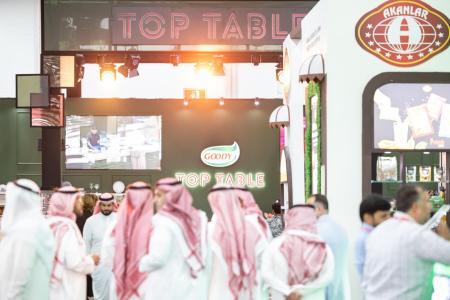
The Saudi Food Show returns to Riyadh Front Exhibition & Convention Center, bringing together global food and beverage leaders to showcase the latest trends, products, and innovations shaping the Kingdom’s fast-growing F&B sector. Alongside the exhibition floor, the Elite Lounge serves as the heart of the Tawasul Meetings—a premium space where top buyers meet top brands and conversations turn into real business impact. Visitors can also catch the excitement at Top Table Saudi, featuring chef-led masterclasses, bold flavours, and standout culinary moments from global icons and local talent, while the Saudi Food Summit delivers interactive sessions on everything from branding strategy to industrial incentives, helping shape the future of F&B. For coffee lovers, Coffee World adds another layer of energy with hands-on masterclasses blending flavour, technique, and passion. Book Now
تفاصيل الحضور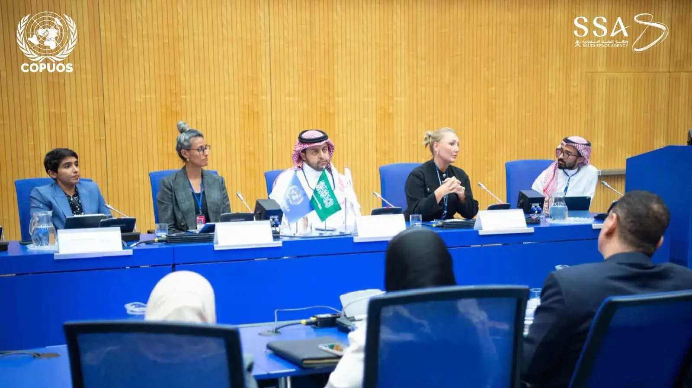
Organized a side event during the current session of the United Nations Committee on the Peaceful Uses of Outer Space (COPUOS)
تفاصيل الحضور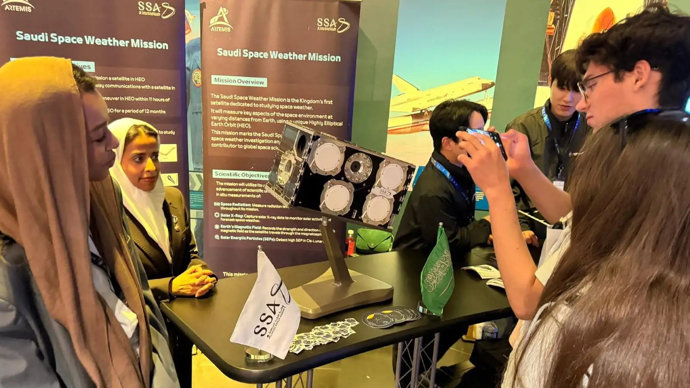
To showcase the Saudi mission “SHMS” and highlight the Kingdom’s contribution to space weather research Artemis II Mission Launch Side Exhibitions ضمن علوم وفضاء في دولي. تبدأ الفعالية ٢٨/٠٣/٢٠٢٦، ٩:٠٠ ص وتنتهي ٣١/٠٣/٢٠٢٦، ٥:٠٠ م حسب البيانات المتاحة. تعرض الصفحة وقت الفعالية وموقعها ومصدرها وروابط التقويم والاتجاهات عند توفرها. المصدر: Saudi Space Agency Events.
تفاصيل الحضور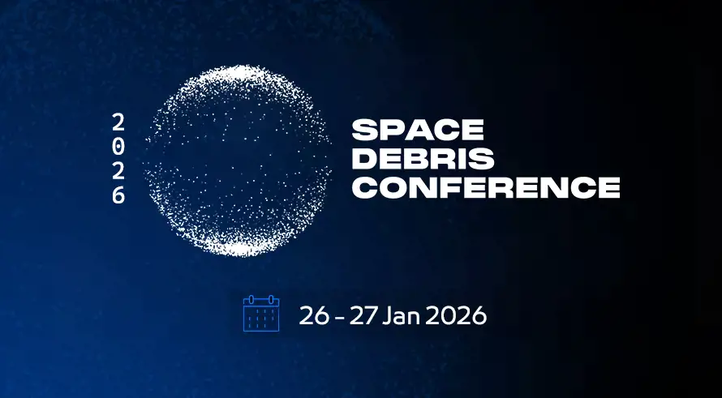
Aims to build upon the critical discussions and insights generated during the successful 2024 conference. Space Debris Conference 2026 ضمن علوم وفضاء في الرياض. تبدأ الفعالية ٢٦/٠١/٢٠٢٦، ١٠:٠٠ ص وتنتهي ٢٧/٠١/٢٠٢٦، ٦:٠٠ م حسب البيانات المتاحة. تعرض الصفحة وقت الفعالية وموقعها ومصدرها وروابط التقويم والاتجاهات عند توفرها. المصدر: Saudi Space Agency Events.
تفاصيل الحضور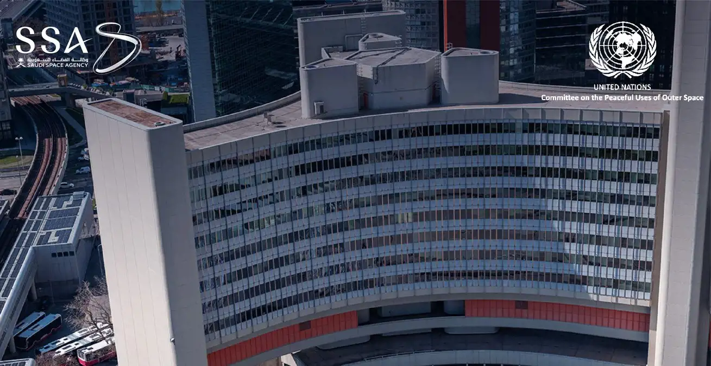
reflects the Kingdom’s commitment to enhancing its presence in international forums The Saudi Arabia participated in the 64th session of the Legal Subcommittee of the United Nations Committee on the Peaceful Uses of Outer Space (COPUOS) ضمن علوم وفضاء في دولي. تبدأ الفعالية ١٥/٠٦/٢٠٢٥، ١٢:٠٠ م وتنتهي ١٥/٠٦/٢٠٢٥، ٥:٠٠ م حسب البيانات المتاحة. تعرض الصفحة وقت الفعالية وموقعها ومصدرها وروابط التقويم والاتجاهات عند توفرها. المصدر: Saudi Space Agency Events.
تفاصيل الحضور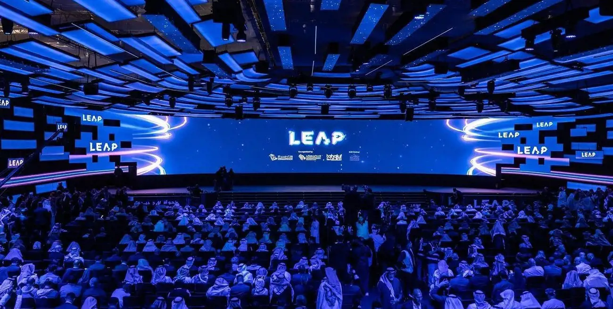
Showcased its efforts to foster innovation in the space sector LEAP25 ضمن علوم وفضاء في الرياض. تبدأ الفعالية ١٢/٠٢/٢٠٢٥، ١٠:٠٠ ص وتنتهي ١٢/٠٢/٢٠٢٥، ٥:٠٠ م حسب البيانات المتاحة. تعرض الصفحة وقت الفعالية وموقعها ومصدرها وروابط التقويم والاتجاهات عند توفرها. المصدر: Saudi Space Agency Events.
تفاصيل الحضور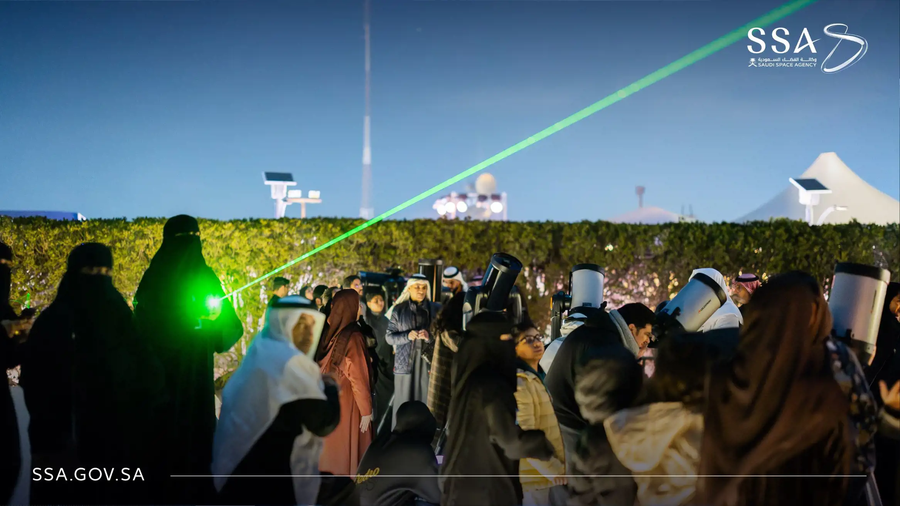
To enhance awareness of astronomy and explore the beauty of the universe Astronomy Night ضمن علوم وفضاء في الرياض. تبدأ الفعالية ١٠/٠١/٢٠٢٥، ٦:٠٠ م وتنتهي ١١/٠١/٢٠٢٥، ١١:٠٠ م حسب البيانات المتاحة. تعرض الصفحة وقت الفعالية وموقعها ومصدرها وروابط التقويم والاتجاهات عند توفرها. المصدر: Saudi Space Agency Events.
تفاصيل الحضور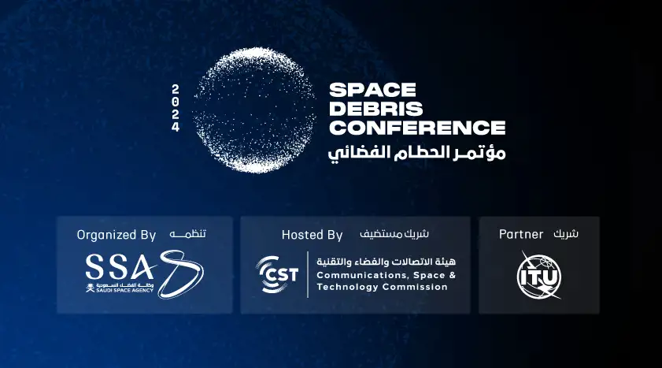
Securing the Future Growth of the Global Space Economy Space Debris ضمن علوم وفضاء في الرياض. تبدأ الفعالية ١١/٠٢/٢٠٢٤، ١٠:٠٠ ص وتنتهي ١٢/٠٢/٢٠٢٤، ٦:٣٠ م حسب البيانات المتاحة. تعرض الصفحة وقت الفعالية وموقعها ومصدرها وروابط التقويم والاتجاهات عند توفرها. المصدر: Saudi Space Agency Events.
تفاصيل الحضور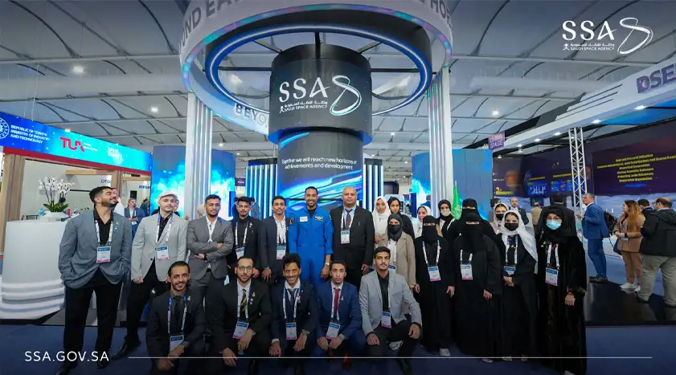
The International Astronautical Congress is an excellent platform that brings together the most prominent authorities and decision-makers in the space sector to confront global challenges in the space sector and explore its untapped potential for the benefit of humanity.
تفاصيل الحضورToday, the Kingdom, represented by the Saudi Space Agency, participated in the G20 Space Economy Leaders’ Meeting held in Bangalore, India, on Thursday and Friday, July 6 and 7,2023, where His Excellency the CEO of the Saudi Space Agency, Dr. Muhammad bin Saud Al Tamimi, headed the Kingdom’s delegation. The Meeting Of Space Leaders Is One Of The Outputs Of The Kingdom’s Presidency Of The G20, Which Included It For The First Time Among The Topics Of The Group’s Agenda, Through Which It Seeks To Enhance Space Cooperation Between Countries To Maximize The Benefits Of The Space Economy And The Benefits Of Using Space Data In Supporting Sustainable Development, Food Security And Global Health.
تفاصيل الحضور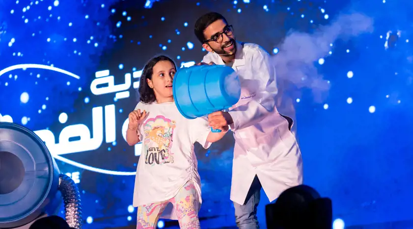
Saudi Space Exhibitions provide an opportunity to explore and learn about space science. Saudi Space Exhibitions ضمن علوم وفضاء في السعودية. تبدأ الفعالية ٢١/٠٥/٢٠٢٣، ٩:٠٠ ص وتنتهي ٢٤/٠٥/٢٠٢٣، ١٢:٠٠ م حسب البيانات المتاحة. تعرض الصفحة وقت الفعالية وموقعها ومصدرها وروابط التقويم والاتجاهات عند توفرها. المصدر: Saudi Space Agency Events.
تفاصيل الحضور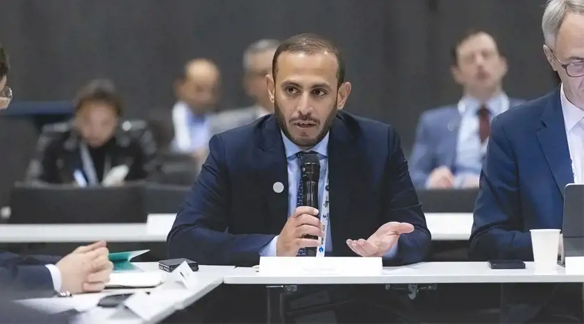
The International Astronautical Congress 2022, held in the French capital, Paris, from September 18 to 22, 2022. The International Astronautical Congress is the world's premier event in the field of global space.
تفاصيل الحضور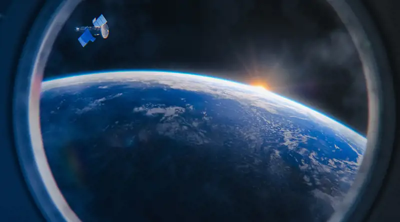
The Saudi Space Commission launches the “Madar” program, which offers several tracks and training courses Saudi Space Commission Launches “Madar” Training Program ضمن علوم وفضاء في جدة. تبدأ الفعالية ٠٣/٠٦/٢٠٢٢، ٢:١٠ م وتنتهي ٠٦/٠٦/٢٠٢٣، ١٢:٠٠ م حسب البيانات المتاحة. تعرض الصفحة وقت الفعالية وموقعها ومصدرها وروابط التقويم والاتجاهات عند توفرها. المصدر: Saudi Space Agency Events.
تفاصيل الحضور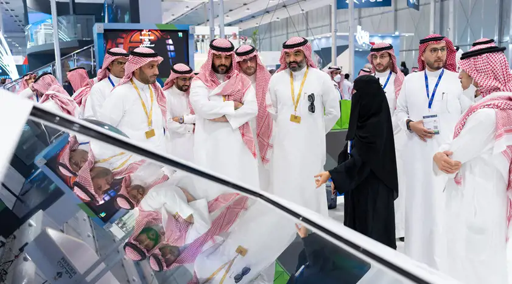
The World Defense Show 2022, in its first edition, focused on the joint integration between air, land, and sea defense systems, satellites, and information security. The Kingdom organized it to become an integrated and unique exhibition of its kind that provides local and international manufacturers, parties concerned with the military and security industries sector, and all interested visitors a unified platform under one roof. It will be an anticipated addition to the series of international defense exhibitions around the world.
تفاصيل الحضور